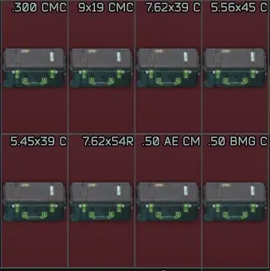
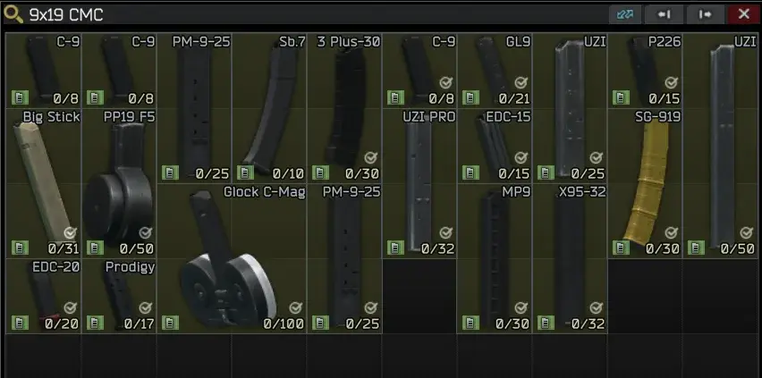
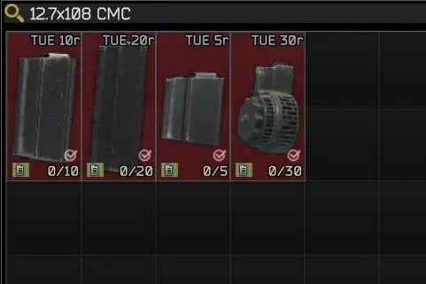

Caliber Split Magazine Cases
- Downloads
- 6,520
- Favourites
- 11
- Mod lists
- 21
Adds procedurally generated magazine cases split by caliber, adapting automatically to the mods and magazines available on your server.
Each magazine is assigned to its caliber case based on the ammo it can hold.
A detailed config file allows you to customize case sizes.
Features
- Automatically generates cases for all magazines in the game (including modded ones, excluding internal magazines)
- Cases can be added to traders: Skier (EUR), Peacekeeper (USD), Ref (GP Coin), Jaeger (RUB), or Prapor (barter)
- Config options for background color, width, height and price of cases
Compatibility
Fully compatible with all mods that add magazines to the game. Load this mod after all magazine-adding mods for proper function.
For best results (correct caliber names and filtering out invalid/unneeded ones), review the config file.
Credits
Part of typescript codebase by GroovypenguinX



Version
2.0.2
- Improved compatibility with other mods that contains errors
Version
2.0.1
Updating: Don’t remove previous files, replace existing files!
- Fixed config option of adding Cases to Prapor for barter
- Extended config functionality
Version
2.0.0
- Updated to C# - SPT 4.0 compatible
- Added cases to Item Case and THICC Item Case filters
Version
1.0.1
IMPORTANT: IF YOU ARE UPDATING, PLEASE ONLY UPDATE AND REPLACE FILES IN “src” FOLDER
- Release for 3.11. Backported fixes from mod v2.0
- Added cases to Item Case and THICC Item Case filters
Version
1.0.0
No description was available in the snapshot.